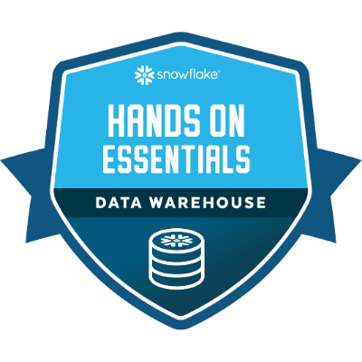
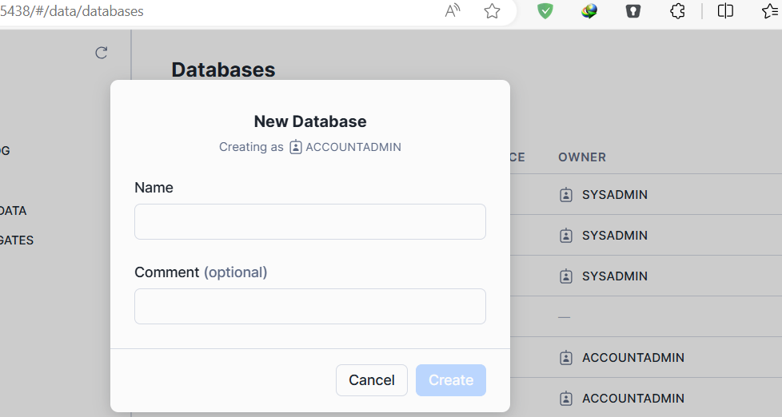

Snowflake Essentials: A Journey to Data Warehousing

Introduction
As I recently completed my Snowflake Essentials badge test, I wanted to share the key takeaways and essential lessons I learned along the way. In this article, we'll dive into the fundamentals of data warehousing, roles, database creation, schema management, and data loading using Snowflake.
Understanding Data Warehousing Basics
Before we begin, let's define some essential terms:
- Data Warehouse: A top-level container for data storage and management. Note that data can be null in a data warehouse.
- Schema: A logical grouping of related tables within a warehouse.
- Table: A specific collection of related data within a schema.
Roles and Access Control
In Snowflake, different role types allow users to interact with data:
- Admin: Has full control over the account.
- System Admin: Manages account settings and security.
- Normal User: A standard user with limited access.
- Public: Anyone can access the data in this role.
Roles can be transferred, such as from:
- Account Admin to Org Admin
- Security Admin
- User Admin
- Public
Creating Databases and Schemas
To get started, create a database and transfer ownership to the desired role. Then, create schemas using the UI or SQL commands.
Creating Tables
Create tables using SQL commands, such as:
CREATE TABLE ( RAW_TABLE_NAME );

Loading Data
Add data to tables using:
- Insert Statements
- Snowflake's Load Data Wizard
- COPY INTO Statements
Data can be loaded from various file formats, including:
- CSV for structured data
- JSON for unstructured or semi-structured data
Querying Data
Once data is loaded, query it using SQL commands to gain insights and analyze your data.
Conclusion
Mastering Snowflake essentials is a crucial step in data warehousing. By understanding roles, database creation, schema management, and data loading, you'll be well-equipped to manage and analyze your data effectively. Remember to practice and explore Snowflake's features to become proficient in data warehousing.
Additional Resources
For further learning, explore Snowflake's documentation and tutorials. Practice with sample data and scenarios to reinforce your understanding.
Final Thoughts
Data warehousing is a powerful tool for unlocking insights and driving business decisions. With Snowflake and these essentials under your belt, you're ready to embark on a journey of data discovery and analysis. Happy learning!